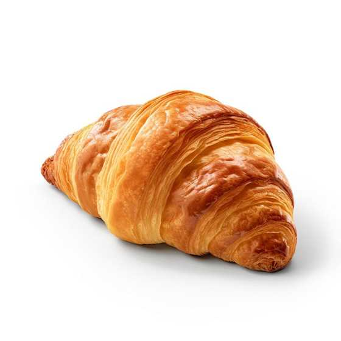
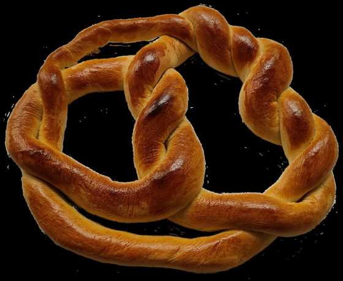
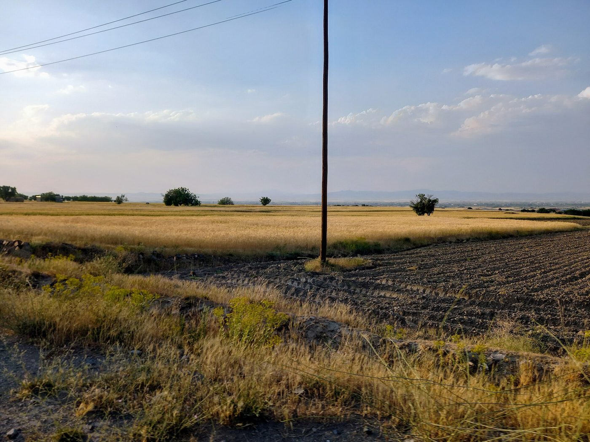

写真はフリー素材のイメージで、店舗の実際の様子・商品ではありません。実際の写真はお店ご提供のものに差し替えます。
ABOUT
お店のこと
酒田駅の東側、駅東にあるベーカリーです。Instagramの自己紹介には「ディレクトでしか買えないパンを扱う」旨があり、2023年6月30日の開始と記されています。
店名の「Direct」は、「直接」「まっすぐ」を意味する英単語です。店名の由来についてお店からの説明は確認できていないため、「まっすぐ届ける」というこのページのコンセプトは制作側のイメージです。

BREAD
パンのこと
Instagramの投稿には、バゲット、クロワッサン、エクレア、バブカ、ライ麦パンなどが写っているようです(画像の自動説明による推定で、正確な品ぞろえは確認できていません)。プロフィールのハイライトには「一升パンについて」という項目もあります。

Kaisersemmel- / Kobako / CC BY-SA 2.5

Sourdoughbreadcrumb / Nleamy / CC BY 2.5

Bread roll with crumb hole / SKopp / CC BY-SA 3.0

Croissant, cross section / SKopp / CC BY-SA 3.0

Croissant Isolated On White Background / personalgraphic.official / CC0 1.0

Bread roll with crumb hole, frontal view / SKopp / CC BY-SA 3.0

Another edible pretzel (-2,3,7) link / Alejo7797 / CC0 1.0

Toasted oatmeal bread with butter and apple butter - Massachusetts / Daderot / CC0

Wheat fields 17 / Shams948 / CC0

Coffee Beans / megforce1 / CC0 1.0
VOICE
口コミ
イメージ例
朝いちばんに寄ったら、クロワッサンの香りで一日が良い始まりになりました。(創作の例文です)
イメージ例
ライ麦のパンは噛むほどに味が出て、また買いに行きたくなります。(創作の例文です)
イメージ例
お昼前に行くと品数が少なくなっていました。早めの来店がおすすめだと思います。(創作の例文です)
上の3件は制作側が作った例文で、実際のお客様の声ではありません。
ACCESS
アクセス・ご案内
| 住所 | 〒998-0022 山形県酒田市駅東2丁目2-10 |
|---|---|
| 営業時間 | 7:30〜16:00 売り切れ次第終了(Instagram自己紹介欄の記載。変更の可能性があります) |
| 定休日 | 月曜・火曜、不定休あり(同上)。臨時休業のお知らせが出ることがあるため、ご来店前にInstagramをご確認ください。 |
| 電話 | 準備中 |
| 価格・メニュー詳細 | 準備中 |
| @bakery.direct |